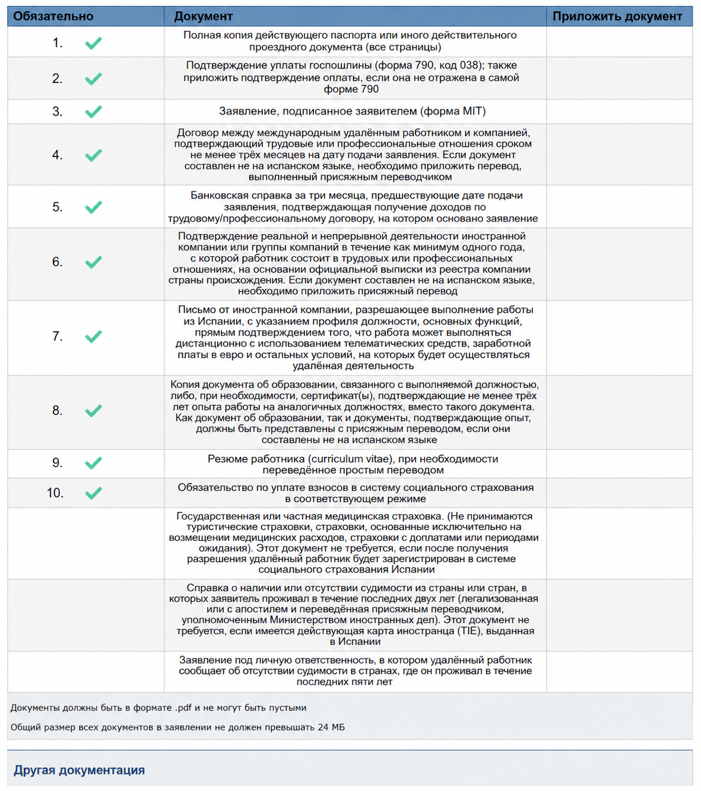
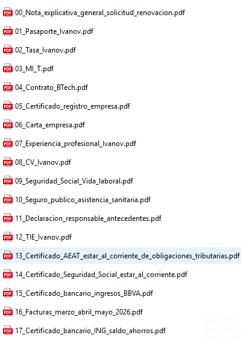

Первичная подача
Работа по контракту: список документов
Вопросы по подаче можно задать в Telegram: t.me/ola_espana.
Для заявителя из России, который не работает в штате иностранной компании, а оказывает услуги иностранным компаниям-клиентам по договорам. После одобрения заявитель регистрируется в Испании как работающий на себя: по-испански это autonomo.
Список документов
| Документ | Что подтверждает | Перевод / легализация |
|---|---|---|
| Сопроводительное письмо | Объясняет состав пакета и формат работы по контракту | Нет, лучше сразу на испанском |
| Formulario MIT | Само заявление | Нет |
| Паспорт | Личность и срок действия документа | Обычно нет |
| Tasa 790 038 | Оплата госпошлины | Нет |
| Договоры с клиентами | Профессиональные отношения минимум 3 месяца до подачи | Если не на испанском - jurado |
| Инвойсы или акты | Что работа реально выполняется и по ней есть доход | Если не на испанском - обычно jurado |
| Банковская выписка за 3 месяца | Поступление дохода на счет заявителя | Если документ не на испанском - jurado |
| Документы компании-клиента | Компания-клиент существует и ведет деятельность минимум 1 год | Публичный иностранный документ: апостиль/легализация + jurado |
| Письмо компании-клиента | Удаленный формат, услуги, сроки, суммы и возможность работать из Испании | Если не на испанском - jurado |
| Диплом или опыт | Квалификация: профильное образование или минимум 3 года опыта | Публичные документы: апостиль/легализация + jurado; письма - jurado |
| CV | Профиль заявителя | Достаточно простого перевода |
| Обязательство зарегистрироваться как autonomo | Что после одобрения заявитель встанет на учет в Испании и будет платить взносы | Нет, лучше сразу на испанском |
| Несудимость | Отсутствие судимости за последние 2 года | Апостиль/легализация + jurado |
| Declaracion responsable | Отсутствие судимости за последние 5 лет | Нет, лучше сразу на испанском |
| Легальное нахождение в Испании | Право подать заявление из Испании | Обычно нет, зависит от документа |
| Представитель | Право представителя подавать и подписывать документы | Если иностранный документ - по ситуации jurado/легализация |
Пример состава пакета для подачи
Номера файлов повторяют строки оригинальной формы. Остальное прикладывается в раздел дополнительных документов, если относится к вашему случаю.
- 01_Pasaporte.pdfПолный паспорт, все страницы.
- 02_Tasa_790_038.pdfФорма 790, код 038, и подтверждение оплаты, если оплата не видна на самой форме.
- 03_Formulario_MIT.pdfЗаявление MIT, заполненное и подписанное заявителем.
- 04_Contratos_clientes.pdfДоговоры с иностранными клиентами, подтверждающие связь минимум 3 месяца до подачи.
- 05_Extracto_bancario_ultimos_3_meses.pdfБанковская справка или выписка за 3 месяца, где видны поступления по договорам.
- 06_Documentos_clientes.pdfПодтверждение, что клиенты или компании реально существуют и ведут деятельность минимум 1 год.
- 07_Cartas_clientes.pdfПисьма от клиентов с описанием услуг, удаленного формата, сроков, сумм и возможности работать из Испании.
- 08_Titulo_o_experiencia.pdfДиплом либо подтверждение минимум 3 лет релевантного опыта.
- 09_CV.pdfРезюме заявителя.
- 10_Compromiso_cotizacion_autonomo.pdfОбязательство платить взносы в испанскую систему социального страхования как autonomo.
- 12_Certificado_antecedentes_penales.pdfСправка о несудимости за страны проживания за последние 2 года, если применимо.
- 13_Declaracion_responsable_antecedentes.pdfДекларация заявителя об отсутствии судимости за последние 5 лет.
Дополнительные документы
- Carta_explicativa.pdfСопроводительное письмо: кто заявитель, какие клиенты, какая работа, как устроен доход.
- Facturas_o_actas_ultimos_3_meses.pdfИнвойсы, акты или аналогичные документы за последние 3 месяца.
- Estancia_regular_en_Espana.pdfПодтверждение легального нахождения в Испании: виза, штамп въезда, декларация о въезде, TIE или другой подходящий документ.
- Representacion.pdfДокументы представителя, если подает представитель.
Что важно именно здесь
Работа по контракту должна выглядеть как реальная профессиональная деятельность, а не как разовый заказ без истории. В пакете должны сходиться договоры, инвойсы или акты, банковские поступления и письма клиентов.
После одобрения заявитель регистрируется в Испании как autonomo и платит взносы. Если этого не сделать, это может стать основанием для прекращения ВНЖ.
Если заявитель работает только со своей компанией или сам фактически контролирует компанию-клиента, пакет сложнее: UGE может запросить документы о собственности, налогах компании, реальной деятельности, вложениях и сотрудниках. Для первичной подачи понятнее выглядит пакет с независимыми внешними клиентами.
Пример подготовки файлов
Ниже примеры из рабочей папки по подаче. Они не заменяют список выше: в форме часть документов может уходить в дополнительные поля, а набор файлов зависит от конкретного кейса.



Официальные ссылки
Закон, памятка UGE, страница подачи и другие официальные ресурсы собраны на странице Полезные ссылки.